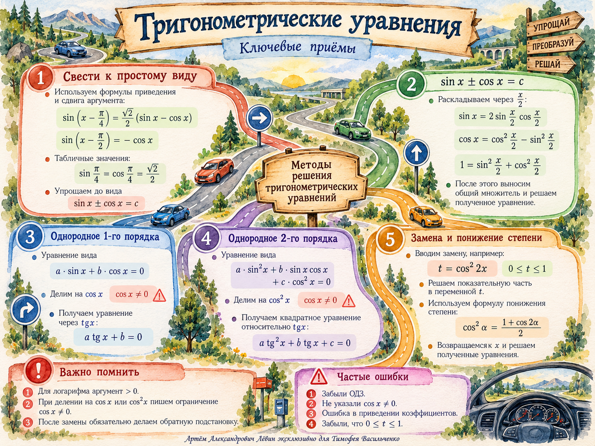

От логарифма к тригонометрии
У логарифма основание положительно и отлично от единицы, а аргумент строго положителен. После этого можно перейти от логарифмического уравнения к показательному.
Вспомните формулы разности углов и дробной степени:
Пример занятия
log1/2(sin(x − π/4) − √2 sin(x − π/2)) = 1/2.
Запишите требование положительности аргумента и получите равенство аргумента числу √2/2.
Раскройте синусы и аккуратно соберите слагаемые:
Метод половинного угла
Когда в уравнении есть sin x, cos x и число, удобно выразить их через половинный угол.
Продолжение примера
Рассмотрите оба множителя. Первый даёт x = 2πn. Во втором случае cos(x/2) ≠ 0, поэтому допустимо разделить на косинус и получить tg(x/2) = 1.
Однородное уравнение первой степени
a sin u + b cos u = 0.
Сначала проверьте случай cos u = 0. При a ≠ 0 корней в этом случае нет; затем можно разделить на cos u и решить a tg u + b = 0.
Однородное уравнение второй степени
Раскройте двойные углы и замените константу на это число, умноженное на sin²x + cos²x. Получится однородное уравнение по синусу и косинусу.
Для оставшихся значений поделите на cos²x и введите t = tg x:
Вернитесь к тангенсу и запишите две серии корней:
Замена и понижение степени
Повторяющийся фрагмент в показателях степеней удобно заменить переменной, сохранив область её значений.
Возвращаемся к x. Формула понижения степени позволяет избавиться от квадрата косинуса:
Ноль и единица входят в допустимый диапазон t. После замены обязательно восстановите исходную переменную.
Самостоятельная тренировка
Отмечайте решённые задачи. Прогресс сохраняется на этом устройстве. В заданиях с делением записывайте ограничения; в ответах с тригонометрией n ∈ ℤ.
- Упростите: sin(x − π/2).
- Вычислите и избавьтесь от корня в знаменателе: 2−1/2.
- Решите: cos x − sin x = 0.
- Решите методом половинного угла: sin x + cos x = 1.
- Решите методом половинного угла: sin x − cos x = 1.
- Решите: log1/2(sin(x + π/4) + √2 sin(x − π/2)) = 1/2.
- Решите: 7 sin 2x − cos 2x = 5.
- Решите: sin 2x + 3 cos 2x = −1.
- Решите: cos²3x = 1/2.
- Решите: 41+cos²x + 2 · 4cos²x = 91+cos²x − 5 · 9cos²x.
Показать ответы для самопроверки
- 01
- −cos x
- 02
- √2/2
- 03
- x = π/4 + πn
- 04
- x = 2πn или x = π/2 + 2πn
- 05
- x = π/2 + 2πn или x = π + 2πn
- 06
- x = π/2 + 2πn или x = π + 2πn
- 07
- x = arctg(1/2) + πn или x = arctg 3 + πn
- 08
- x = −π/4 + πn или x = arctg 2 + πn
- 09
- x = π/12 + πn/6
- 10
- x = π/4 + πn/2
Во всех сериях n ∈ ℤ.
